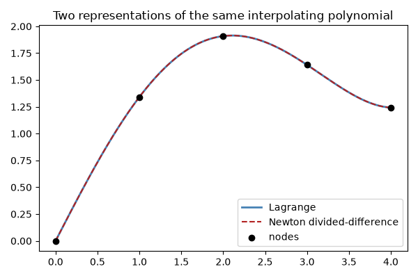

Note
Go to the end to download the full example code.
Lagrange vs. Newton divided-difference interpolation#
There is exactly one polynomial of degree \(\leq n\) through
\(n+1\) distinct points, so LagrangeInterpolant
and NewtonDividedDifference
– built from completely different representations (a sum of basis
polynomials vs. nested divided differences) – must produce identical
curves. Both are also exact for any polynomial up to the interpolation
degree, which this script verifies directly.
import matplotlib.pyplot as plt
import numpy as np
from mathkit.numerical_analysis import LagrangeInterpolant, NewtonDividedDifference
Same data, two representations#
x = np.array([0.0, 1.0, 2.0, 3.0, 4.0])
y = np.sin(x) + 0.5 * x
p_lagrange = LagrangeInterpolant(x, y)
p_newton = NewtonDividedDifference(x, y)
x_fine = np.linspace(x.min(), x.max(), 300)
y_lagrange = p_lagrange.evaluate(x_fine)
y_newton = p_newton.evaluate(x_fine)
print("max |Lagrange - Newton| over the fine grid:", np.max(np.abs(y_lagrange - y_newton)))
fig, ax = plt.subplots(figsize=(6, 4))
ax.plot(x_fine, y_lagrange, color="steelblue", lw=2, label="Lagrange")
ax.plot(x_fine, y_newton, "--", color="firebrick", lw=1.5, label="Newton divided-difference")
ax.scatter(x, y, color="black", zorder=3, label="nodes")
ax.set_title("Two representations of the same interpolating polynomial")
ax.legend()
fig.tight_layout()

max |Lagrange - Newton| over the fine grid: 8.881784197001252e-16
Exactness on a polynomial up to the interpolation degree#
A degree-4 polynomial through 5 nodes should be reproduced to floating-point precision.
x5 = np.linspace(0.0, 4.0, 5)
y5 = 2.0 * x5**4 - 3.0 * x5**3 + x5 - 1.0
p5 = NewtonDividedDifference(x5, y5)
x_test = np.linspace(0.0, 4.0, 50)
expected = 2.0 * x_test**4 - 3.0 * x_test**3 + x_test - 1.0
print("max error vs. exact degree-4 polynomial:", np.max(np.abs(p5.evaluate(x_test) - expected)))
plt.show()
max error vs. exact degree-4 polynomial: 5.684341886080802e-14
Total running time of the script: (0 minutes 0.044 seconds)